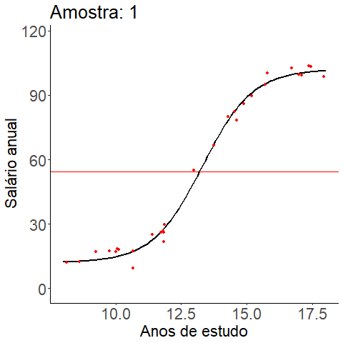

Magno Severino
Suponha que queremos estimar a função que relaciona o total de anos de estudo (\(X\)) de uma pessoa com o seu salário anual (\(Y\)).
Assuma que o modelo verdadeiro que relaciona anos de estudo (\(X\)) e salário (\(Y\)) seja: \[ Y = g(X) + \varepsilon, \] onde:
Foram geradas 100 amostras de tamanho \(n=30\) e foram ajustados modelos polinomiais de diferentes graus.
Comparativo de modelos com polinômios de diferentes graus estimados em 100 amostras diferentes.

Comparativo de modelos com polinômios de diferentes graus. O ponto azul é a média das 100 estimativas feitas quando \(X = 11\).
Lembre-se que a parcela redutível do erro de predição esperado admite a seguinte decomposição
\[\begin{align} \text{EQM}[\hat{g}(x)] &= E[(\hat g(x)-g(x))^2]\\ &= \text{Viés}^2[\hat{g}(x)] + \text{Var}[\hat{g}(x)], \end{align}\]
em que o víes e a variância condicionados em \(X=x\) são dados por
\[ \text{Viés}[\hat{g}(x)] = \text{E}[\hat{g}(x)] - g(x) \] e \[ \text{Var}[\hat{g}(x)] = \text{E}\left[(\hat{g}(x) - \text{E}[\hat{g}(x)])^2\right]. \]
Relembre o modelo de regressão linear
\[y_i = \beta_0 + \beta_1x_{i1} + \cdots + \beta_px_{ip} + \epsilon.\]
O objetivo é encontrar \(\mathbf\beta^T = (\beta_0, \beta_1, \dots, \beta_p)\) que minimiza \[ \sum_{i=1}^{n}\Big(y_i - \beta_0 -\sum_{j=1}^p \beta_jx_{ij}\Big)^2 \]
para \(\mathbf x_i = (1, x_1, \dots, x_p).\)
A estimativa de mínimos quadrados é dada por \[ \hat\beta = (\beta_0, \beta_1, \dots, \beta_d) = (\mathbf X^T \mathbf X)^{-1} \mathbf X^T \mathbf y, \]
em que \(X = (\mathbf x_1^T, \dots, \mathbf x_n^T)\) é a matriz de especificação do modelo e \(\mathbf y = (y_1, \dots, y_n)^T.\)
Possíveis alternativas para remover variáveis irrelevantes de um modelo de RLM, de modo a obter maior interpretabilidade
Seleção de subconjuntos de variáveis (subset selection): melhor subconjunto, stepwise (forward e backward), uso de critérios de informação (AIC, BIC, \(R^2\) ajustado).
Redução da dimensão: projetar os preditores sobre um subespaço de dimensão menor \(q < p\), que consiste em obter combinações lineares (ou projeções) dos preditores.
Regularização ou encolhimento (shrinkage): usa todos os preditores mas os coeficentes são encolhidos para zero; pode funcionar para selecionar variáveis. Reduz variância.
Regularização refere-se a um conjunto de técnicas utilizadas para especificar modelos que se ajustem a um conjunto de dados evitando o sobreajuste (overfitting).
Nessas técnicas, a função de perda contém um termo de penalização cuja finalidade é reduzir (encolher) a influência de preditoras irrelevantes.
Pode não ser óbvio inicialmente como essa encolha nos coeficientes possa melhorar o ajuste, mas essa técnica busca reduzir a variância das estimativas.
Proposta por Hoerl e Kennard (1970) para tratar do problema da multicolinearidade mas também pode ser utilizada para corrigir problemas ligados ao sobreajuste.
A regressão Ridge é bastante similar à regressão linear, porém leva em conta um termo de regularização na função de perda. Assim, \[ \hat{\beta}_{\ell_2,\lambda} = \operatorname*{arg\,min}_{\beta} \sum_{i=1}^{n} \left( y_i - \beta_0 - \sum_{j=1}^{p} \beta_j x_{ij} \right)^2 + \lambda \sum_{j=1}^{p} \beta_j^2 \] em que \(\ell_2\) indica o fato de que estamos medindo a complexidade de um vetor \(\beta\) usando sua norma em \(\ell_2\), \(||\beta||_{2}^2 = \sum_{j=1}^{p} \beta_j^2\).
Dizemos que \(\hat{\beta}_{\ell_2,\lambda}\) é o estimador Ridge.
Aqui, \(\lambda\) é um hiperparâmetro que controla o impacto da regularização nos coeficientes.
O que acontece quando \(\lambda = 0?\)
E quando \(\lambda = \infty?\)
A escolha de \(\lambda\) é critica!
Note que \(\beta_0\) não é regularizado.
Pode-se mostrar que para cada \(\lambda \geq 0,\) existe \(s\geq 0\) tal que \[ \hat{\beta}_{\ell_2,\lambda} = \operatorname*{arg\,min}_{\beta} \sum_{i=1}^{n} \left( y_i - \beta_0 - \sum_{j=1}^{p} \beta_j x_{ij} \right)^2 + \lambda \sum_{j=1}^{p} \beta_j^2 \]
é equivalente a
\[\operatorname*{arg\,min}_{\beta} \Bigg\{ \sum_{i=1}^{n}\bigg(y_i - \beta_0 - \sum_{j=1}^p \beta_j x_{ij}\bigg)^2\Bigg\} \quad \text{sujeito a } \quad \sum_{j=1}^p \beta_j^2 \leq s.\]
Isso evidencia mais uma vez que a penalização favorece coeficientes “pequenos” quando comparados à solução de mínimos quadrados.
No método de mínimos quadrados, temos \(\mathcal G = \{g(x) = \beta^T\mathbf x, \beta \in \mathbb R^{p+1}\}.\)
No Ridge, \(\mathcal G_{\ell_2} = \{g(x) = \beta_0+\beta^T\mathbf x, \beta \in \mathbb R^{p}, \|\beta\|_2^2 \leq s\}.\)
Considere o caso em que \(Y = \beta_0 + \beta_1X_1\). Se \(s=4\) então \(\vert \beta_1 \vert^2 \leq 4\).
No método de mínimos quadrados temos \(\mathcal G = \{g(x) = \beta^T\mathbf x, \beta \in \mathbb R^{p+1}\}.\)
No Ridge, \(\mathcal G_{\ell_2} = \{g(x) = \beta_0+\beta^T\mathbf x, \beta \in \mathbb R^{p}, \|\beta\|_2^2 \leq s\}.\)
Considere o caso em que \(Y = \beta_0 + \beta_1X_1\). Se \(s=4\) então \(\vert \beta_1 \vert^2 \leq 4\).
No método de mínimos quadrados temos \(\mathcal G = \{g(x) = \beta^T\mathbf x, \beta \in \mathbb R^{p+1}\}.\)
No Ridge, \(\mathcal G_{\ell_2} = \{g(x) = \beta_0+\beta^T\mathbf x, \beta \in \mathbb R^{p}, \|\beta\|_2^2 \leq s\}.\)
Considere o caso em que \(Y = \beta_0 + \beta_1X_1\). Se \(s=4\) então \(\vert \beta_1 \vert^2 \leq 4\).
No método de mínimos quadrados temos \(\mathcal G = \{g(x) = \beta^T\mathbf x, \beta \in \mathbb R^{p+1}\}.\)
No Ridge, \(\mathcal G_{\ell_2} = \{g(x) = \beta_0+\beta^T\mathbf x, \beta \in \mathbb R^{p}, \|\beta\|_2^2 \leq s\}.\)
Considere o caso em que \(Y = \beta_0 + \beta_1X_1\). Se \(s=4\) então \(\vert \beta_1 \vert^2 \leq 4\).
Considere o cenário em que temos duas preditoras \(X_1\) e \(X_2\).
Considere o cenário em que temos duas preditoras \(X_1\) e \(X_2\).
Considere o cenário em que temos duas preditoras \(X_1\) e \(X_2\).
\[ \mathcal{G} = \{g(x)=\beta_0+\beta_1x:(\beta_0,\beta_1)\in\mathbb{R}^2\}, \qquad \mathcal{G}_{\ell_2} = \{g(x)=\beta_0+\beta_1x:(\beta_0,\beta_1)\in\mathbb{R}^2, (\beta_1)^2<s\}. \]
Quando \(\lambda\) cresce, a flexibilidade da regressão ridge diminui, levando à diminuição na variância e aumento do viés.
Viés ao quadrado (preto), variância (verde), erro quadrático médio de teste (roxo). Dados simulados, \(n=50\), \(p=45.\)
Figura do livro James, Gareth, et al. An introduction to statistical learning, 2021.
É possível mostrar que a solução de mínimos quadrados com penalidade ridge é: \[ \hat{\beta}_{\ell_2,\lambda} = (\mathbf X^T \mathbf X + \lambda I_0)^{-1}\mathbf X^T \mathbf y, \] onde \(\mathbb{I}_0\) é uma matriz identidade \((p+1) \times (p+1)\) modificada de modo que \(\mathbb{I}_0(1,1) = 0.\)
Apesar de não introduzir soluções com zeros, a regressão ridge diminui a variância dos estimadores da regressão.
Em geral, o estimador Ridge não é consistente, pois a penalidade \(\ell_2\) enviesa os coeficientes em direção a zero.
A técnica Ridge não serve para seleção de modelos.
A escolha do coeficiente de regularização \(\lambda\) pode ser feita via validação cruzada.
As estimativas Ridge não são invariantes à escala, como na regressão linear.
Disvantagem do Ridge: não seleciona variáveis! Embora não seja um problema para acurácia das predições, cria um desafio para interpretação quando \(p\) é grande.
Desenvolvido por Tibshirani (1996).
A regressão Lasso considera a norma \(\ell_1\) como regularização.
Formalmente, no Lasso, buscamos por
\[ \hat{\beta}_{\ell_1,\lambda} = \operatorname*{arg\,min}_{\beta} \sum_{i=1}^{n} \left( y_i - \beta_0 - \sum_{j=1}^{p} \beta_j x_{ij} \right)^2 + \lambda \sum_{j=1}^{p} |\beta_j|. \]
A norma \(\ell_1\) força alguns coeficientes para zero quando \(\lambda\) é grande o suficiente.
Pode-se mostrar que para cada \(\lambda \geq 0,\) existe \(s\geq 0\) tal que minimizar a quantidade acima é equivalente a resolver
\[\hat\beta_s = \operatorname*{arg\,min}_{\beta} \Bigg\{ \sum_{i=1}^{n}\bigg(y_i - \beta_0 - \sum_{j=1}^p \beta_j x_{ij}\bigg)^2\Bigg\} \quad \text{sujeito a } \quad \sum_{j=1}^p \vert\beta_j\vert \leq s.\]
Considere o cenário em que temos duas preditoras \(X_1\) e \(X_2\).
Considere o cenário em que temos duas preditoras \(X_1\) e \(X_2\).
O estimador Lasso encolhe para zero os parâmetros que correspondem a preditores redundantes.
O estimador Lasso é enviesado para parâmetros não nulos.
A regressão Lasso não possui solução analítica no caso geral! Solução aproximada baseada em métodos de otimização convexa.
Por ser um problema convexo, resolver o problema de otimização do Lasso é muito mais rápido que buscar pelo melhor subconjunto de covariáveis.
Considere o cenário em que temos duas preditoras \(X_1\) e \(X_2\).
Figura do livro James, Gareth, et al. An introduction to statistical learning, 2021.
A penalidade elastic-net foi introduzida por Zou e Hastie (2005) como um compromisso entre a regressão Ridge e o Lasso.
Combina as penalidades \(\ell_1\) e \(\ell_2\): seleciona variáveis como o Lasso e reduz os coeficientes de preditores correlacionados como a regressão Ridge
A fórmula da penalidade elastic-net é dada por:
\[ \lambda\sum_{j=1}^{p}\big(\alpha\beta_{j}^{2}+(1-\alpha)|\beta_{j}|\big), \] onde \(\lambda\) controla a força da penalização e \(\alpha\) é o parâmetro que equilibra a contribuição das penalidades \(L_1\) e \(L_2\).
\(\alpha = 1/2\)
Figura do livro Morettin, Pedro A., and Julio M. Singer. “Introduçao a Ciência de Dados.” Introdução à Ciência de Dados: Fundamentos e Aplicações (2020).
A validação cruzada é um método para selecionar o parâmetro de regularização \(\lambda.\)
Seja \(\mathcal{D} = \{(\mathbf{x}_i, y_i)\}_{i=1}^n\) o conjunto de dados observados.
Algoritmo:
Treina-se o modelo nos \(k-1\) folds restantes, ou seja, obtêm-se \(\beta_\lambda^{(-j)}\).
Calcula-se o MSE no fold \(j\):
\[\text{EQM}_j(\lambda) = \frac{1}{|\mathcal{D}_j|} \sum_{(\mathbf{x}_i, y_i) \in \mathcal{D}_j} \bigg(y_i - \mathbf{x}_i^\top \hat\beta_\lambda^{(-j)}\bigg)^2.\]